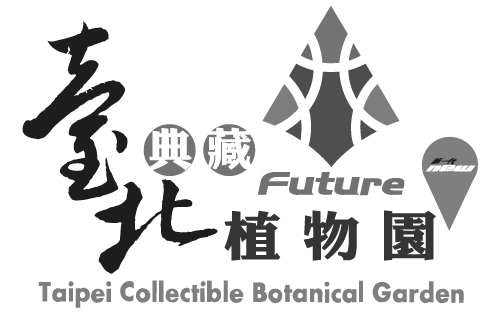
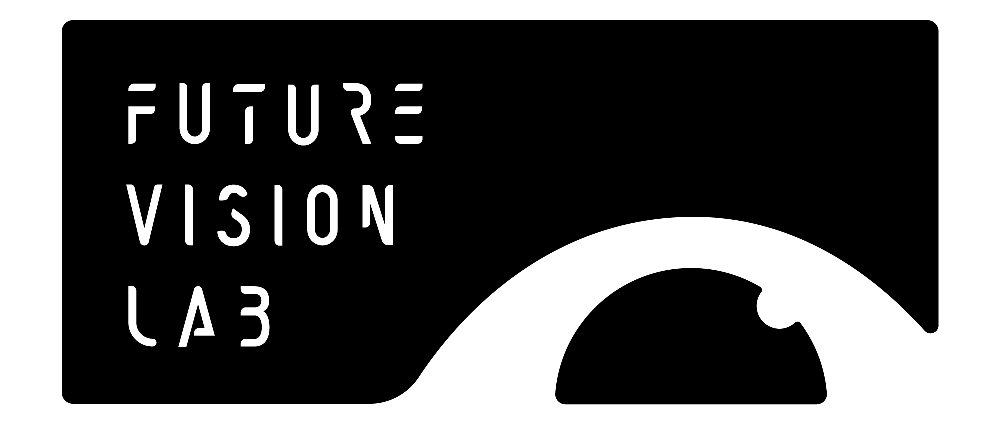

EXECUTIVE UNIT
arTecture brings together a dynamic team of professionals from diverse fields, including visual arts, performing arts, theater, stage and prop production, exhibition design, and event planning. The company has planned and delivered numerous major events across Taiwan, including the Taiwan Lantern Festival, land art festivals, floral art festivals, expos, and other large-scale cultural events.
With expertise spanning a wide range of disciplines, arTecture became the second company in Asia and the first in Taiwan to achieve ISO 20121 certification for its organizational event sustainability management system. Integrating the three pillars of economic, environmental, and social sustainability into event planning and execution lies at the heart of the company’s mission and core values.
WEBSITEVENUE PARTNER

Taipei Collectible Botanical Garden
Located in the Xinsheng Area of Taipei Expo Park, the Taipei Collectible Botanical Garden is an exhibition greenhouse that combines Diamond-Level Green Building design with horticultural innovation. Centered on the relationship between people, plants, and the environment, the garden brings together plant species from Taiwan’s diverse climates and regions, creating a microcosm of the island’s ecological landscape. It features the greatest variety of plant species per unit area among botanical greenhouses in Taiwan.
The greenhouse is organized into themed ecological zones, including native Taiwanese plants, tropical and subtropical plants, orchids and ferns, succulents, temperate plants, and alpine plants. With nearly 500 plant species on display, the garden showcases Taiwan’s rich biodiversity and offers a weather-independent, family-friendly destination for experiencing nature and environmental education.

TAIPEI EXPO FOUNDATION
Established by the Taipei City Government in 2011, the TAIPEI EXPO FOUNDATION is dedicated to the effective operation and revitalization of Taipei Expo Park. The Foundation manages the exhibition venues throughout the park while promoting the development of Taipei’s convention and exhibition, design, and innovation industries.
The Foundation also actively attracts and supports major international conferences, exhibitions, competitions, and events, helping to enhance Taipei’s global visibility and competitiveness while creating diverse spaces for recreation, cultural exchange, and industry engagement.
PARTNERS

C-LAB’s Future Vision Lab
C-LAB’s Future Vision Lab is a technology and media experimentation platform initiated by the Taiwan Contemporary Culture Lab (C-LAB), with a particular focus on immersive moving-image practices.
At its core is DOME, a dome theater that uses spherical projection technology to explore the possibilities of future visual culture and technological art. With strong R&D capabilities, the platform integrates image processing, projection stitching, hardware and software systems, surround sound, and architectural design. In addition to presenting exhibitions and performances and supporting creators in developing new works, the Future Vision Lab facilitates interdisciplinary experimentation, continually opening up new perspectives on future visual practices and innovative technologies.
Fluid Noise
Founded in 2011, Fluid Noise is dedicated to promoting experimental sound, creative coding, and audiovisual art. Its activities center on four key areas: promotion, education, creative development, and community building.
Through lectures, workshops, emerging artist development programs, and informal gatherings for creators, Fluid Noise connects organizations and communities in Taiwan and abroad while cultivating creative and production talent in the fields of experimental sound and audiovisual art.
Hyper Wave Taipei Space
Hyper Wave was formally established as an art collective in Taipei’s Wanhua District in 2022. Its founding members were artists selected for the Ministry of Culture’s 2020 “MIT” program, with independent artists and curators later joining the collective.
The name “Hyper Wave” reflects the shifting and uncertain nature of art in contemporary society. Embracing the identity of artistic wanderers, the collective seeks to bring the qualities of contemporary art into fragments of everyday life and to open up possibilities for dialogue through art within real-world contexts.
Through exhibitions, artist residencies, research projects, workshops, and public programs, Hyper Wave connects art practitioners from diverse cultural backgrounds and explores the relationships between art, place, and contemporary society. Its projects extend across Taiwan and internationally, fostering cross-regional dialogue and long-term collaboration.
WEBSITEZhongshan Community College
Established in 2003, Zhongshan Community College is operated by Daojiang High School of Nursing and Home Economics, with its main campus located on Xinsheng North Road in Taipei’s Zhongshan District. Guided by the principles of “lifelong learning and civic engagement,” the College integrates local history and culture with the district’s contemporary commercial character, offering a diverse range of courses in the humanities, practical and creative skills, and community activities.
The College is committed to fostering civic literacy and encouraging learners to participate in public affairs and local revitalization. Through flexible learning opportunities, it provides community residents with an accessible and welcoming platform for knowledge sharing, personal growth, and social connection.
WEBSITESPONSORS
Team Group Inc.
Team Group Inc. specializes in the development and production of its own-brand memory modules, memory cards, USB flash drives, solid-state drives (SSDs), peripheral products, mobile accessories, and industrial memory and storage solutions. In 2016, the company launched T-FORCE, its gaming product line, followed by T-CREATE, a product line designed for creators, in 2020.
Team Group Inc. products have received numerous design awards and international recognition, including the COMPUTEX d&i awards, Best Choice Award, Taiwan Good Design Product Award, Golden Pin Design Award, Taiwan Excellence Awards, Japan’s GOOD DESIGN AWARD, Germany’s iF Design Award 2021 and Red Dot Design Award. Its products have also earned widespread recognition from technology media around the world.
c2x3
c2x3 is a blockchain art media platform dedicated to the development of digital and generative art, with an ongoing focus on the evolving digital art markets and ecosystems in Taiwan and around the world.
Through articles, interviews, talks, exhibitions, and community events, the team documents developments in digital art within a global context while sharing perspectives from artists and collectors. By connecting the art, technology, and Web3 communities, c2x3 actively promotes and supports the creation and development of digital and generative art in Taiwan.
Austrian Office Taipei
Located in Taipei’s Songshan District, the Austrian Office Taipei is the official representation of the Republic of Austria in Taiwan. It is dedicated to strengthening exchanges between Austria and Taiwan across a wide range of fields, including culture, education, academia, and tourism.
The Office also provides consular services, including applications for short-stay visas, working holiday visas, and residence permits for Austria. It also issues Schengen visas on behalf of Greece. For Austrian citizens in Taiwan, the Office provides essential consular assistance, including passport services, document authentication, and emergency support.
Czech Centre Taipei
Established in June 2024, Czech Centre Taipei is part of the global network of Czech Centres under the Ministry of Foreign Affairs of the Czech Republic and works in close cooperation with the Czech Economic and Cultural Office in Taipei. As an important platform for Czech public diplomacy and cultural engagement, it aims to deepen the Taiwanese public’s understanding of contemporary Czech culture while fostering exchange between Taiwan and the Czech Republic.
Its programs span a wide range of cultural activities, including exhibitions, film screenings, lectures, and seminars, with a particular focus on design, literature, film, innovation, and gaming. Czech Centre Taipei also supports artist residency programs and collaborates with cultural institutions across Taiwan to create platforms for meaningful and sustained exchange between the two sides.
WeMo Scooter
WeMo redefines urban mobility by opening up more possibilities for exploring the city with freedom and flexibility. With an upgraded experience built around going farther, discovering more, and enjoying every ride, getting around is no longer simply about traveling from Point A to Point B—it becomes a sensory adventure with twice the fun.
With the freedom to switch between WeMo Fly and WeMo GO, WeMo makes “twice as easy to rent, twice as fun to ride” more than just a mobility experience—it becomes an irresistible way of life.
Official Website
TIEDA
The Taiwan Interactive and Experiential Design Association (TIEDA) is dedicated to advancing research, exchange, and development in interactive experience design, interactive art, and human-computer interaction.
Through lectures, workshops, exhibitions, and interdisciplinary collaborations, TIEDA brings together creators and professionals from the fields of design, art, technology, and industry. By providing a platform for knowledge sharing and practical exchange, the Association seeks to expand the possibilities of interactive experiences in Taiwan.
MEWAY VISION
Since its establishment in 1995, Meway has specialized in video, LED displays, lighting, audio, and integrated technical production services. Backed by a professional team, extensive experience, and comprehensive equipment, Meway delivers high-quality audiovisual experiences for events of all scales.
From corporate events and product launches to exhibitions and large-scale performances, Meway combines professional planning, meticulous execution, and dedicated service to ensure that every memorable moment is seen, heard, and presented at its best.

Philips Monitors
Philips Monitors builds on the brand’s longstanding technological expertise to deliver visual experiences that combine performance and aesthetics through innovative technology, precise image quality, and user-centered design.
Its exclusive Ambilight technology synchronizes with on-screen content, extending colors and light beyond the display to create a richer, more immersive atmosphere. Whether watching movies, gaming, or enjoying music and entertainment, it brings every experience to life with greater sensory depth.
With high-resolution displays, smooth refresh rates, smart connectivity, and eye-care technologies, Philips Monitors meets a wide range of needs for both work and entertainment. By seamlessly integrating technology into everyday life, Philips Monitors expands every viewing experience through crisp detail and dynamic light.
TECHMAN ROBOT INC.
Founded in Taiwan in 2015, TECHMAN ROBOT INC. is the world’s only robotics brand with natively integrated vision and AI. Within just three years of its establishment, the company became one of the world’s leading collaborative robot manufacturers. Today, TECHMAN ROBOT continues to advance the adoption of AI-powered robotics as a pioneer in Physical AI.
At the Taipei Digital Art Festival, artist Wang Lien-Cheng presents his work using TM5S and TM7S collaborative robots, equipped with built-in AI vision and native software. Bringing precise robotic movement together with artistic creativity, the work explores the possibilities of human-machine co-creation and demonstrates how intelligent technologies can move beyond industrial applications into culture and everyday life.
WEBSITESUPPORTING PARTNER
Hong Foundation
Founded in 1971 by Chien-Chuan Hong, founder of National, the Hong Foundation is one of Taiwan’s earliest nonprofit cultural and educational organizations established with corporate support.
Guided by a spirit of “sowing seeds and pioneering new paths,” the Foundation has long been committed to advancing arts, culture, and education in Taiwan. Throughout its history, it has often been at the forefront of cultural development. In the 1970s, it founded Shu Ping Shu Mu (Book Review and Bibliography) magazine and played an active role in Taiwan’s folk music movement. Since the 1990s, its LEARNING PROGRAM has continued to foster adult learning in literature, history, philosophy, and the arts.
In recent years, the Foundation has shifted its focus toward supporting experimental and original contemporary art. Through initiatives such as the TUNG CHUNG PRIZE and QUESTION PROJECT, it provides multifaceted support for artists and creators while actively fostering a sustainable creative ecosystem in Taiwan.

Panasonic Taiwan
Established in 1962, Panasonic Taiwan is a key member of the Panasonic Group in Taiwan. Beginning with the production of radios and speakers, the company has expanded over more than six decades into a diverse range of businesses, including home appliances, audiovisual products, automotive electronics, electronic components, and smart solutions for commercial applications. Today, it maintains an integrated operation encompassing research and development, manufacturing, sales, and after-sales service.
In recent years, Panasonic Taiwan has increasingly integrated AI technologies into its green transformation initiatives, developing smart home appliance ecosystems and net-zero demonstration sites as part of its ongoing commitment to sustainability and improving quality of life.